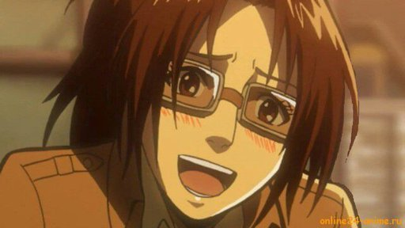

ИсторияТоп самых популярных персонажейИстория создания образа титановМангаПервый титанВооружённый силыРост титанов |
Ханджи ЗоеХанджи Зое (ハンジ・ゾエ Хандзи Дзоэ) – бывший лидер отряда Разведкорпуса, а также главный исследователь. После смерти Эрвина Смита заняла его место и стала 14-ым Главнокомандующим Разведкорпуса.  Ханджи открытая, доброжелательная, обладает чувством юмора; некоторые считают её милой. Она фанатично интересуется природой гигантов, о которых может рассказывать бесконечно. Зое болтушка. В своих кругах считается безумной, однако может проявить завидную выдержку и решимость, хорошо продумывает тактику боя с минимальными потерями людей. Является создателем специального оружия захвата цели, которое смогло обездвижить Женскую Особь. <на главную |